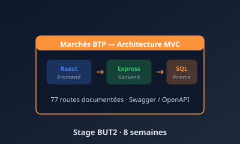

Stage BUT2 — Marchés BTP
8 semaines chez une startup BTP/numérique incubée à l'IMT Business School. Mon bilan personnel par compétence.
Reprise et amélioration d'une plateforme web de mise en relation BTP
26 janvier — 20 mars 2026 · Évry-Courcouronnes
Marchés BTP — SAS fondée par Marko Marinkovic et Brahim, incubée à l'IMT Business School. Plateforme reliant entreprises BTP, freelances et porteurs d'appels d'offres.

Encadrement et contexte
Mes missions principales
À mon arrivée, la plateforme existait mais souffrait de problèmes structurels : architecture floue, fonctionnalités cassées, aucune documentation. Mes missions ont été :
Restructuration en architecture MVC
Analyse du code existant, proposition et défense de l'architecture Modèle-Vue-Contrôleur face à une alternative micro-services. Mise en place du pattern (routes → contrôleurs → services → Prisma).
Développement de 4 nouveaux modules backend
Création des modèles Prisma + routes/contrôleurs/services pour : Messages (messagerie interne), Paiements (transactions), Avis (évaluations croisées), Milestones (jalons de contrat avec paiements automatiques).
Développement frontend React
Création des services API Axios (paiementApi, avisApi, milestoneApi, favorisApi, notificationApi). Développement complet du composant MesFavoris.jsx avec gestion d'état via hooks (useState, useEffect).
Adaptation responsive
Menu hamburger pour la sidebar mobile, tableaux convertis en cartes empilées sur petits écrans, grilles adaptatives Tailwind (grid-cols-1 / sm:grid-cols-2 / lg:grid-cols-4). Tests sur 4 tailles d'écran (320, 375, 768, 1024 px).
Documentation Swagger de 77 routes API
Apprentissage du format OpenAPI 3.0, puis documentation systématique de l'ensemble de l'API : auth (11), freelances (10), entreprises (9), appels d'offres (8), contrats (11), messages (7), notifications (7), géocodage (5), admin (10).
Tests fonctionnels et rapport de bugs
Navigation systématique sur les 4 dashboards (admin, freelance, entreprise, appels d'offres). Identification de 17 bugs avec captures, descriptions, comportements attendus et fichiers à corriger.
Passation du projet
Installation de l'environnement de dev sur le Mac des fondateurs (Homebrew, PostgreSQL, Node, Prisma). Transfert via WeTransfer + clé USB exFAT après échec d'une clé NTFS sur macOS.
Bilan par compétence du BUT
Référence : référentiel des compétences du BUT Informatique. Pour chaque compétence, je note ce que j'ai concrètement mobilisé, et mon ressenti.
Compétence 1 — Réaliser un développement d'application
Mobilisée à : très haut niveau. J'ai développé en fullstack pendant 8 semaines réels : React + hooks côté frontend, Node.js + Express côté backend, le tout connecté à PostgreSQL via Prisma. J'ai mené un projet de bout en bout, de la maquette à la mise en prod.
Mon ressenti : énorme progression. J'ai eu pour la première fois la sensation de « construire » un vrai logiciel, pas juste rendre un livrable scolaire.
Compétence 2 — Optimiser des applications
Mobilisée à : niveau moyen. Sur la refactorisation MVC, j'ai dû identifier les goulets d'étranglement (code dupliqué, routes éparpillées entre deux backends, requêtes Prisma non optimisées). J'ai aussi optimisé certaines requêtes en utilisant des include Prisma pour éviter les requêtes N+1.
Mon ressenti : je sais maintenant détecter du code mal structuré. Je dois encore progresser sur l'optimisation des requêtes en base à grande échelle.
Compétence 3 — Administrer des systèmes informatiques communicants
Mobilisée à : niveau moyen. Installation de l'environnement complet (Node, PostgreSQL, Prisma) sur deux OS différents (Windows pour moi, macOS pour les fondateurs). Configuration d'un serveur Express avec CORS, middlewares de sécurité (Helmet, RateLimit), authentification JWT. Documentation Swagger de l'API.
Mon ressenti : les bases UNIX vues en SAÉ 1.03 et 2.03 m'ont énormément servi. Sans elles, j'aurais été perdu sur le Mac avec Homebrew.
Compétence 4 — Gérer des données de l'information
Mobilisée à : haut niveau. J'ai créé 4 nouveaux modèles Prisma (Message, Paiement, Avis, Milestone) en lien avec les 21 modèles existants. J'ai écrit des requêtes avec relations complexes (jointures sur 3 tables), géré l'intégrité (un avis ne peut pas être laissé sur un contrat non terminé, un utilisateur ne peut pas se noter lui-même, etc.).
Mon ressenti : Prisma est une vraie révélation. Mes acquis en SQL et modélisation (SAÉ 1.04) m'ont permis de comprendre rapidement la logique de l'ORM.
Compétence 5 — Conduire un projet
Mobilisée à : niveau moyen-élevé. J'ai planifié mes 8 semaines en autonomie, proposé des choix d'architecture défendus à l'oral devant les fondateurs (non-techniciens), géré les priorités au quotidien, et livré deux documents importants à la fin (Swagger + rapport de bugs). J'ai aussi proposé un suivi structuré qui a remplacé un simple groupe WhatsApp.
Mon ressenti : j'ai aimé l'aspect autonomie. Je sais maintenant qu'en startup, on attend de toi des propositions, pas juste de l'exécution.
Compétence 6 — Collaborer au sein d'une équipe
Mobilisée à : haut niveau. Échanges quotidiens avec Nadia (technique), points hebdo avec les fondateurs (vision produit), interactions avec Ayman, Abraham, Melissa, Cemilia. Vulgarisation de concepts techniques (MVC, architecture) pour des fondateurs non-développeurs. Git, présentiel + télétravail.
Mon ressenti : j'ai compris que savoir expliquer ce qu'on fait est aussi important que de le faire. C'est probablement la compétence soft la plus transformatrice du stage.
Synthèse personnelle du stage
Ce que je retiens surtout : la documentation n'est pas un bonus, c'est un livrable. J'ai vécu en tant que lecteur ce que les futurs développeurs auraient vécu sans ma Swagger. Cette expérience me servira toute ma carrière.
Sur le plan humain, l'ambiance startup (proximité, autonomie, tutoiement, échanges directs) m'a beaucoup plu. J'ai compris que c'était le type d'environnement où je voulais travailler en alternance puis après mon diplôme.